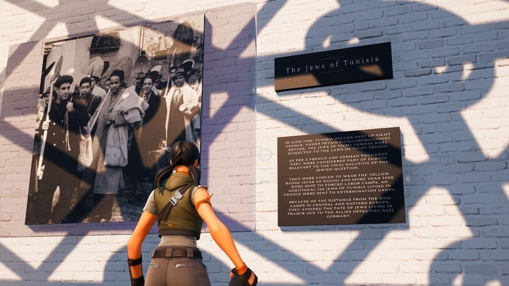

Fortnite is getting an unofficial Holocaust museumThe world's next Holocaust museum is being built inside one of the planet's most popular video games, Fortnite. Driving the news: The virtual building, called the Voices of the Forgotten Museum, will let players walk its halls to read plaques describing the genocide against Jews in Nazi Germany and see photos of Jewish resistance fighters and heroic individuals who sheltered Jews. - While Fortnite is typically used as a cartoony multiplayer competitive shooting game, visitors to the Museum, which will be offered as a separate, peaceful experience, will not be able to play the game inside it. What they're saying: "I feel a responsibility to make sure those who died are still remembered," independent game designer Luc Bernard, who has been building the virtual museum with a colleague, tells Axios. - The L.A.-based game creator — who released The Light in the Darkness, a free video game set during the Holocaust, earlier this year — says physical Holocaust museums, while invaluable, have their limits. - "It's time to adapt," Bernard says. "Millions of dollars are being put into museums which I believe are important, but we are ignoring most of the population, and even worldwide," - He says more people can be reached by finding them where they are, and many of them have one foot in the virtual world of video games. Details: The virtual museum was built over the course of a few weeks earlier this year and just got approved for release last week by Fortnite publisher Epic. - Epic was not involved in the museum's creation, but works created in Fortnite have to adhere to the game's age rating, which limits what a Fortnite Holocaust museum can depict. - "We can't show dead bodies or camps or things like that," Bernard says. Between the lines: Because it is set in Fortnite and because Fortnite is rife with pop culture crossovers, visitors to Bernard's Fortnite Holocaust museum will show up as their Fortnite character, which just might be Optimus Prime, Spider-Man or a walking banana. - That's just the way it goes, Bernard says: "People take selfies at Auschwitz and play Pokémon Go at Holocaust monuments. You cannot stop people from doing stuff, and if you live in fear of that happening, then you would hide away anything about the Holocaust," he says. - The design of the Fortnite Holocaust museum nevertheless drew on a key lesson from Epic's own 2021 Fortnite event celebrating Martin Luther King, Jr., where the mood was initially undermined by attendees' ability to do the floss. In Bernard's museum, players' "emotes," including the ability to dance, will be turned off. The big picture: The Voices of the Fallen Museum is arriving in Fortnite as the Anti-Defamation League reports an increase in anti-Semitism and as people and institutions focused on raising awareness of the Holocaust turn to technology to preserve the historical record. Yes, but what an online museum may gain in being accessible to more people comes at the expense of it being more ephemeral, even when linked to a game that at last count had 70 million users a month. - Online experiences can help teach new generations the truth about the Holocaust, Sara J. Bloomfield, director of the United States Holocaust Memorial Museum, tells Axios. "Nothing, however, can replace the unique experience of a museum visit where individuals, in a communal experience, directly encounter authentic objects." - For Bernard, the Fortnite museum and his Light in the Darkness game are proofs that "doing things digitally can reduce the costs and also bring awareness to millions." What's next: The Voices of the Forgotten Museum will be made available in Fortnite in coming weeks, Bernard says. Sign up for the Axios Gaming newsletter here. |
 |